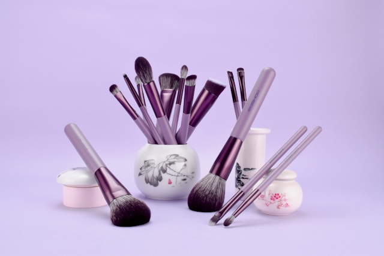

Image Upload and Download Application
October 2024 - Present
Technologies used: React Js, Typescript, Node.js, AWS Lambda, SQS, AWS SQL Database
A microservice based Node.js app using AWS Lambda and SQS for processing image uploads and downloads. Some notable achievements:
- Efficient processing of image uploads
- Integrated with AWS services for scalability
- Used pre-signed URLs to upload files directly to AWS S3 from front end. The Express server won’t need to handle file uploads. Instead, it focuses simply on generating pre-signed URLs for your frontend to use...

Beauty Connect
November 2021 - April 2022
Technologies used: MERN Stack
A web app using MERN stack to connect beauty professionals and clients. Some notable achievements:
- Implemented user authentication and authorization
- Integrated payment processing
- Responsive design for both desktop and mobile

Dynamic Form Renderer
October 1, 2024, 3 hour work
Technologies used: React, Material-UI
A React app that renders dynamic forms based on configurations. Some notable achievements:
- Dynamic rendering based on user input
- Responsive and user-friendly interface